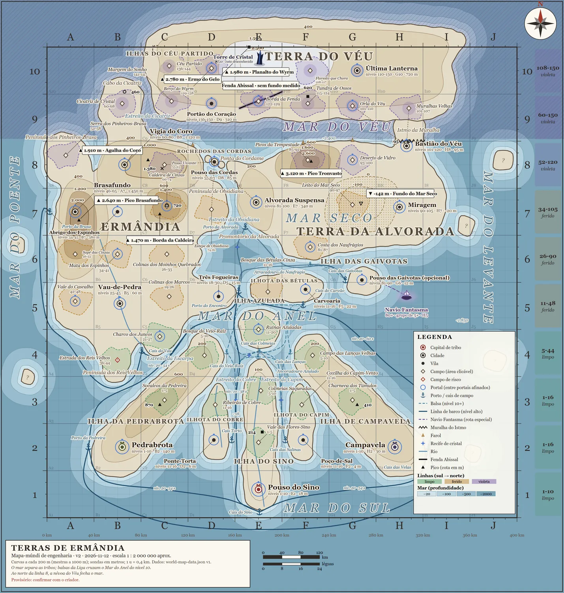

Ragna Tale
RPG de ação isométrico, online, de heróis que mudam a cada evolução.
Peça central do mundo
O mapa-múndi de Ermândia
Relevo, mares, rios, rotas de barco, portais e todos os locais do jogo, num mapa de engenharia interativo: dê zoom, arraste e clique em qualquer região.

Abrir o mapa interativoTribos
Três tribos, três jeitos de responder ao cristal
Juramento ao sino: proteger a vila, a luz e quem não luta. A tribo mais clássica e a mais fácil de aprender. Cidade inicial: Pouso do Sino.
Mão, fogo e raiz: o cristal é colheita e matéria. Lenta, pesada, orgulhosa do que faz com as mãos. Cidade inicial: Pedrabrota.
Disciplina de exército: lembrar os mortos e não largar a fila. Tática e incomum. Cidade inicial: Campavela.
Ler a história das tribos · Ver as tribos e suas linhas de classe
Explore a wiki
Tudo sobre o jogo, num lugar só
O jogo
Cace, evolua, mostre o que conquistou
Ragna Tale é um RPG de ação isométrico de fantasia, 100% online. Você escolhe uma tribo e uma linha de classe, caça com o grupo, encontra drops raros, cartas e chefes, e vê o herói se transformar a cada evolução.
Pilares
O que guia o design
Caçar em grupo, drop raro, cartas, refino e chefes: sempre há um motivo para mais uma caçada.
O herói muda de aparência a cada traje, arma e evolução. Você vê e sente o que ganhou.
Tribos, linhas, ramos, elementos e cartas: dois personagens do mesmo nível não são iguais.
Mercado entre jogadores com ouro do jogo. Nada pago dá poder, drop ou XP.
Grupo, PvP por faixa de nível e mapas de risco são jogo normal; jogar junto compensa, sem excluir quem joga só.
Sem pay-to-win: nada que se compra dá poder, drop ou XP.
Produção
Em produção agora
9 decisões esperam o criador. Últimas entregas:
- Sombras por nível gráfico: máximo com sombras reais; básico com sombra redonda sob personagens e monstros
- Decalques no Vale das Flores-Sino + regra na skill de mapas + build novo no launcher
- Habilidades: trava por ramo no aprender + fichas 6–11 do ramo principal nas 11 linhas + 21 pré-requisitos
- Cor por material e herói em destaque: nitidez, luz de contorno, mundo sem filtro geral, 3 looks + armaduras com vida
- Skills 009: 72 habilidades dos ramos irmãos + 12 ultimates por ramo (aprovado 15/11)
- Aplicar a aprovação do criador: ultimates, equipamentos e magias (docs, GDDs, dados)